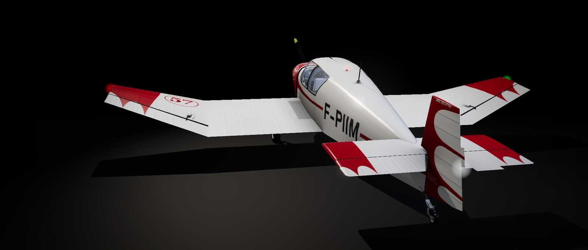
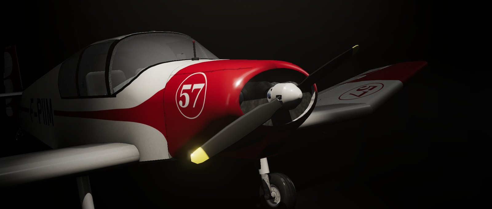
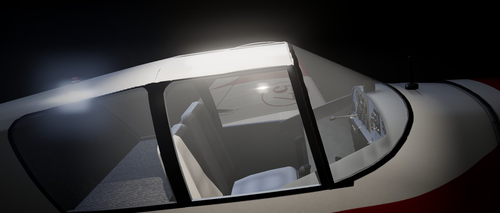
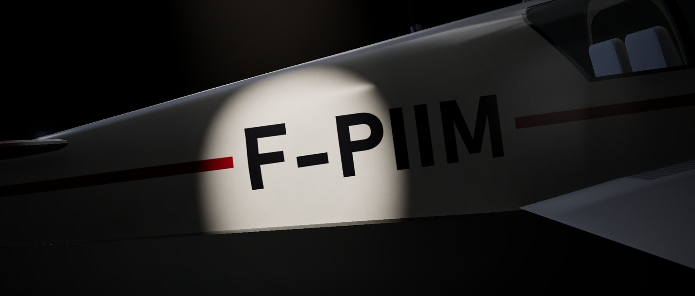
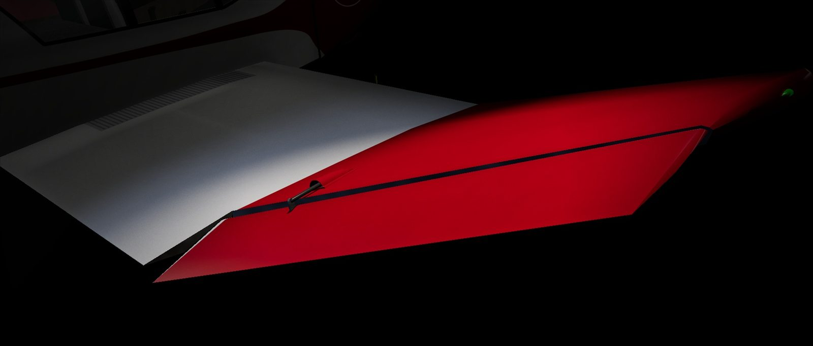
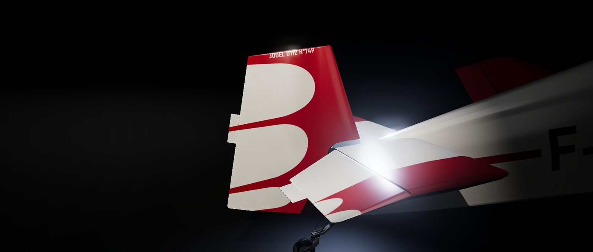
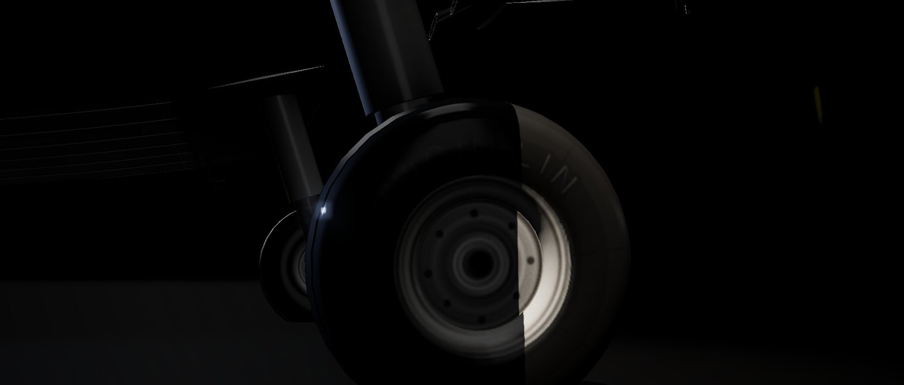

Livrée F-PIIM en 4K
Décoration « Racing Spirit » : nez rouge, « 57 », filet, lobes de dérive et saumons à griffes relevés sur les photos du club. La livrée orange de helijah reste disponible.
Des avions pour X-Plane 11, modélisés d'après les vrais appareils, leurs plans et leurs fiches. Premier sorti du hangar : le Jodel D112 F-PIIM.

Rendu du modèle · livrée Racing SpiritLe biplace de voyage de Jean Délémontez et Édouard Joly, tel que vole le F-PIIM, restauré en 2020 par les membres de l'Aéro-club du Bassin Minier.
Pour les adhérents de l'ACBMCe modèle est avant tout dédié aux adhérents de l'Aéro-club du Bassin Minier : retrouver dans X-Plane l'avion du club, sa planche de bord et ses procédures, entre deux vols.
Le modèle 3D d'Emmanuel Baranger (helijah) a été converti pour X-Plane 11, puis repris pièce par pièce d'après les photos de l'avion : livrée, cadres de verrière, planche de bord, portes, compte-tours calé sur sa ligne rouge à 2300 tr/min.
Le modèle de vol suit les cotes Jodel officielles et la fiche de l'appareil : masses, puissance, consommation et vitesses limites.
Décoration « Racing Spirit » : nez rouge, « 57 », filet, lobes de dérive et saumons à griffes relevés sur les photos du club. La livrée orange de helijah reste disponible.
Planche refaite d'après l'avion, 22 commandes cliquables et démarrage moteur arrêté, batterie coupée.
Articulées sur le montant du pare-brise, avec une poignée cliquable dans chaque porte.
Moteur étouffé dans la cabine fermée, qui revient fort dès qu'une porte s'ouvre.
Gouvernes et tringles d'aileron, roues, aiguilles, sélecteur de magnétos, tirettes Récho, Carbu et Cabine.
Fréquences et code affichés depuis le simulateur, écrans éteints quand le courant est coupé.






X-Plane 11/Aircraft/. Vous pouvez le renommer « Jodel D112 ».Mises à jourCompatible SkunkCrafts Updater : une fois installé, le Jodel apparaît dans l'Updater, qui ne retélécharge que les fichiers modifiés à chaque nouvelle version.
Gratuit, et fidèle à l'avionLes avions LF71DC n'ont pas vocation à être des modèles « Study Level ». Nous faisons en sorte que chacun reste cohérent avec la réalité : photos de l'appareil, documentation et fiche technique à l'appui. D'où leur gratuité.